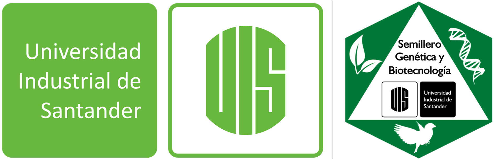

El ciclo de talleres fue organizado por los miembros de COMPASS y el semillero de investigación en genética y biotecnología de la
Universidad Industrial de Santander
Para facilitar la interacción entre los participantes y los instructores usaremos la plataforma Slack. Por favor ingresen al siguiente link para unirse al canal de Slack del ciclo de talleres:
Slack channel
Objetivo
Introducir diferentes herramientas para el análisis de datos, principalmente en el lenguaje de programación R, para incrementar el conocimiento de los participantes en metodologías actuales que se usan en la investigación en el área de la biología, genómica y agricultura
Introducción a Python
En este curso se presentaran las herramientas basicas para empezar a trabajar en el lenguaje de programacion python
Temas del taller: Análisis exploratorio de datos, manipulación, limpieza y visualización de datos, aprendizaje automático
Programas: Anaconda-link
Instructores: Marco Lopez PhD, Viviana Ortiz PhDc
Taller de genética cuantitativa
Este taller abordará conceptos básicos de genética cuantitativa. Para entender mejor los conceptos se realizarán simulaciones en el lenguaje de programación R de fenotipos con diferente arquitectura genética.
El objetivo del taller es realizar una comparación entre rasgos cualitativos y cuantitativos para discutir las implicaciones de la arquitectura genética tanto en el descubrimiento de las regiones genómicas asociadas a estos rasgos, como también el uso práctico de esta información en los programas de fitomejoramiento.
Temas del taller: Rasgos cuantitativos, heredabilidad, mapeo asociativo, selección genómica
Paquetes de R: rrBLUP, dplyr, qqman, CMplot, latticeExtra, ggplot2, grDevices, RColorBrewer
Instructor: Paulo Izquierdo PhDc
Taller de estadística básica
R es una de las herramientas estadísticas más potentes para identificar diferencias entre grupos de datos así como su significancia. En este curso teórico-práctico revisaremos cómo calcular medidas de tendencia central, test paramétricos y no paramétricos. Adicionalmente, veremos cómo incluir valores de significancia en visualizaciones para explicar diferencias en grupos.
Temas del taller: medidas de tendencia central, t de student, chi-cuadrado, ANOVA, PERMANOVA, Wilcoxon, Kruskal Wallis, regresión lineal.
Paquetes de R: base, tidyverse (dplyr, ggplot2), ggpubr
Instructor: Karla Vasco PhDc
Taxonomía molecular y filogenética de hongos - parte 1
La forma en que los humanos hemos clasificado los organismos ha cambiado drásticamente en las últimas décadas. Primero, basándonos exclusivamente en sus características morfológicas y posteriormente los clasificamos considerando la distribución y composición de las sustancias en ellos, por ejemplo: ADN, proteínas, etc. En conjunto, las técnicas moleculares y estudios filogenéticos han permitido establecer las relaciones evolutivas entre estas entidades vivas y asignarlas a categorías o grupos. En este taller, vamos a estudiar algunas de las técnicas y herramientas modernas para la clasificación y estudio de las relaciones evolutivas de los hongos. Para esto, aprenderemos sobre las regiones más usadas del genoma para estudios filogenéticos, algoritmos más usados, cómo extraer información de repositorios públicos de secuencias y bases de datos de hongos. Por último, haremos un repaso sobre los requerimientos mínimos para describir una nueva especie de hongo para la ciencia.
Temas del taller: El Código de Nomenclatura de Hongos, repositorios públicos de secuencias, bases de datos de hongos, análisis de secuencias “barcode”, análisis filogenéticos.
Programas: Descargar MEGA y un editor de texto (Notepad++, BBEdit, Sublime).
Portales que usaremos: NCBI Blast , Mycobank , Index Fungorum , Código internacional de nomenclatura de algas, hongos y plantas , CIPRES
Instructor: Pedro Parra PhD
Taxonomía molecular y filogenética de hongos - parte 2
La forma en que los humanos hemos clasificado los organismos ha cambiado drásticamente en las últimas décadas. Primero, basándonos exclusivamente en sus características morfológicas y posteriormente los clasificamos considerando la distribución y composición de las sustancias en ellos, por ejemplo: ADN, proteínas, etc. En conjunto, las técnicas moleculares y estudios filogenéticos han permitido establecer las relaciones evolutivas entre estas entidades vivas y asignarlas a categorías o grupos. En este taller, vamos a estudiar algunas de las técnicas y herramientas modernas para la clasificación y estudio de las relaciones evolutivas de los hongos. Para esto, aprenderemos sobre las regiones más usadas del genoma para estudios filogenéticos, algoritmos más usados, cómo extraer información de repositorios públicos de secuencias y bases de datos de hongos. Por último, haremos un repaso sobre los requerimientos mínimos para describir una nueva especie de hongo para la ciencia.
Temas del taller: El Código de Nomenclatura de Hongos, repositorios públicos de secuencias, bases de datos de hongos, análisis de secuencias “barcode”, análisis filogenéticos.
Programas: Descargar MEGA y un editor de texto (Notepad++, BBEdit, Sublime).
Portales que usaremos: NCBI Blast , Mycobank , Index Fungorum , Código internacional de nomenclatura de algas, hongos y plantas , CIPRES
Instructor: Pedro Parra PhD
Análisis de expresión génica con R
El objetivo del taller es brindar conocimientos sobre la importancia de la expresión genética en el desarrollo de plantas. El estudiante será capaz de manipular y comprender los datos de los registros de expresión genética. Así mismo, podrá realizar gráficas que le permitan entender el comportamiento de los datos analizados. También, a través de análisis bioinformáticos determinará cuáles son los genes candidatos dadas ciertas condiciones, tratamientos o tejidos cuyo análisis está en cuestión.
Temas del taller: Expresión genética, normalización, prueba de hipótesis, análisis de expresión genética.
Paquetes de R: DeSeq2, edgeR, NOISeq, ggplot2
Instructor: Mirella Flores PhD
Este ciclo de talleres no hubiera podido realizarse sin la ayuda y organización de la profesora Luz Nayibe Garzón Gutiérrez directora del semillero de investigación en Genética y Biotecnología y al apoyo del profesor Fernando Rondón director del Grupo de investigación en Microbiología y Genética de la Universidad Industrial de Santander.
